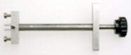
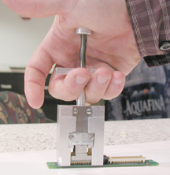

Operating Documentation
Direction 5193755-800, Rev# 8
BrightSpeed (Ltd. Access) Service Methods - Adv
Operating Documentation |
Illustration 1 shows the Flex Extraction Tool. This tool uses a syringe type action to remove the Flex Lead from the DDIF.
Illustration 1: Flex Extraction Tool

Illustration 2 shows the Interposer Removal Tool. This tool uses a grab and pull action to remove the Interposer from the backplane BGA connector.
Illustration 2: Interposer Removal Tool
